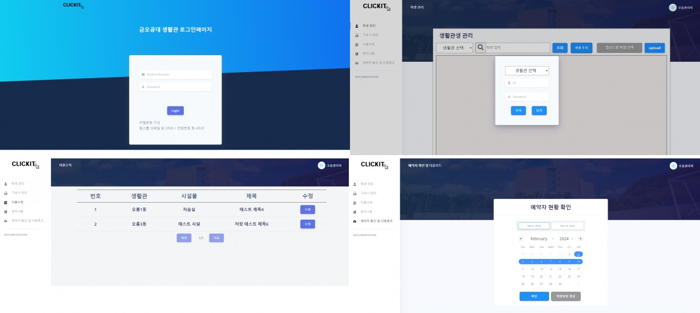
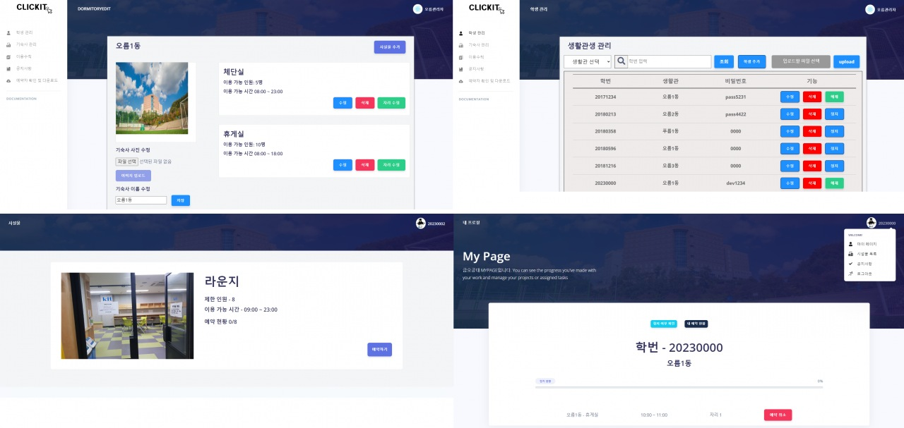

CliKit
미리보기


코로나 격리 해제로 인한 학급 시설물에 인원이 몰려 일어날
사고 예방 차원에서 시설물 예약 시스템을 제작하였습니다.
담당 업무
- 시설물 관리자와의 미팅 팀 회의
- 전체적인 UI틀과 UI 제약
- 각 단계별 문서 관리
- DB 설계 및 관리
- front-end 디자인 및 기능 생성
- back-end SQL query 구현 및 연결
구체적인 구현 기능
시설물 관리자와의 미팅 팀 회의
- 직접 대학교 생활관 관리 관계자와 미팅을 잡아 요구사항을 받고 프로젝트를 시행
- 주 1회 팀 회의, 주 2회 대면 프로젝트
전체적인 UI틀과 로고 및 디자인
- 시설물 예약 시스템에 맞는 디자인 컨택 후 FIGMA,kakao oven을 통해 작업
- 폰트, 글자색, 글자 크기 규정을 정함
각 단계별 문서 관리
- 주제 제안서, 요구명세서,설계명세서 등 여러 문서작성
- 매주 회의안에 나온 의견 정리해 회의록 작성
DB 설계 및 관리
- mySQL을 활용하여 DB 설계
front-end 디자인 및 기능 생성
- react를 활용한 다양한 api 기능 추가
- 회원가입, 생활관 관리 및 시설물 관리 기능 추가
- json을 활용해 데이터 입출력
back-end SQL query 구현 및 연결
- node.js를 활용하여 각 기능에 맞는 SQL query 작성
사용 기술
- 개발 언어 : javaScript
- 라이브러리 : React, Axios
- 사용 프레임워크 : React, Express
- DBMS : MySQL
산출물
- 주제 제안서
- 요구명세서
- 설계명세서
- 최종보고서
- 회의록
- 직접 대학교 생활관 관리 관계자와 미팅을 잡아 요구사항을 받고 프로젝트를 시행
- 주 1회 팀 회의, 주 2회 대면 프로젝트
- 시설물 예약 시스템에 맞는 디자인 컨택 후 FIGMA,kakao oven을 통해 작업
- 폰트, 글자색, 글자 크기 규정을 정함
- 주제 제안서, 요구명세서,설계명세서 등 여러 문서작성
- 매주 회의안에 나온 의견 정리해 회의록 작성
- mySQL을 활용하여 DB 설계
- react를 활용한 다양한 api 기능 추가
- 회원가입, 생활관 관리 및 시설물 관리 기능 추가
- json을 활용해 데이터 입출력
- node.js를 활용하여 각 기능에 맞는 SQL query 작성
- 시설물 관리자와의 미팅 팀 회의
- 전체적인 UI틀과 로고 및 디자인
- 각 단계별 문서 관리
- DB 설계 및 관리
- front-end 디자인 및 기능 생성
- back-end SQL query 구현 및 연결
사용 기술
- 개발 언어 : javaScript
- 라이브러리 : React, Axios
- 사용 프레임워크 : React, Express
- DBMS : MySQL
산출물
- 주제 제안서
- 요구명세서
- 설계명세서
- 최종보고서
- 회의록